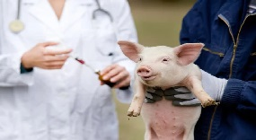

| 🐾 Mascotas 🐾 Animales de granja 🐾 Servicios del campo 🐾 Material de Apoyo |
ANIMALES DE GRANJA
¡Descubre a nuestros asociados de RuralVet que apadrinarán tu granja! Aquí podrás conocer sus perfiles y ponerte en contacto con ellos. En esta página, encontrarás a nuestros socios comprometidos con la comunidad rural, impulsando la vida en el campo.
-
Veterinaria El Rancho
Descripción: Ofrecen atención integral para animales de granja, caballos, mascotas y animales exóticos. Cuentan con servicios de medicina preventiva, cirugía, diagnóstico por imágenes y laboratorio.
Ubicación: Bogotá, Colombia -
Agrocampo Veterinaria
Descripción: Brindan atención veterinaria especializada en animales de producción, mascotas y equinos. Ofrecen servicios de medicina preventiva, reproductiva, cirugía, laboratorio y farmacia.
Ubicación: Villavicencio, Colombia -
Clínica Veterinaria La Pradera
Descripción: Se especializan en la atención de animales de granja, equinos y mascotas. Cuentan con servicios de medicina preventiva, cirugía, diagnóstico por imágenes, laboratorio y peluquería canina.
Ubicación: Medellín, Colombia -
Veterinaria Hacienda Paz
Descripción: Ofrecen atención integral para animales de producción, mascotas y equinos. Cuentan con servicios de medicina preventiva, reproductiva, cirugía, laboratorio y farmacia.
Ubicación: Ibagué, Colombia -
Clínica Veterinaria Campestre El Refugio
Descripción: Brindan atención veterinaria especializada en animales de granja, equinos y mascotas. Ofrecen servicios de medicina preventiva, cirugía, diagnóstico por imágenes, laboratorio y tienda de mascotas.
Ubicación: Cali, Colombia -
Centro Veterinario San Francisco
Descripción: Se especializan en la atención de animales de producción, equinos y mascotas. Cuentan con servicios de medicina preventiva, reproductiva, cirugía, laboratorio y peluquería canina y felina.
Ubicación: Cúcuta, Colombia -
Veterinaria Llanos
Descripción: Ofrecen atención integral para animales de producción, mascotas y equinos. Cuentan con servicios de medicina preventiva, reproductiva, cirugía, laboratorio y farmacia.
Ubicación: Villavicencio, Colombia -
Clínica Veterinaria El Socorro
Descripción: Brindan atención veterinaria especializada en animales de granja, equinos y mascotas. Ofrecen servicios de medicina preventiva, cirugía, diagnóstico por imágenes, laboratorio y tienda de mascotas.
Ubicación: Bucaramanga, Colombia -
Agropecuaria Los Pinos
Descripción: Se especializan en la atención de animales de producción, equinos y mascotas. Cuentan con servicios de medicina preventiva, reproductiva, cirugía, laboratorio y farmacia.
Ubicación: Montería, Colombia -
Veterinaria La Granja
Descripción: Ofrecen atención integral para animales de producción, mascotas y equinos. Cuentan con servicios de medicina preventiva, reproductiva, cirugía, laboratorio y farmacia.
Ubicación: Neiva, Colombia -
Clínica Veterinaria Campestre Villa del Sol
Descripción: Brindan atención veterinaria especializada en animales de granja, equinos y mascotas. Ofrecen servicios de medicina preventiva, cirugía, diagnóstico por imágenes, laboratorio y tienda de mascotas.
Ubicación: Sincelejo, Colombia -
Centro Veterinario San Alberto
Descripción: Se especializan en la atención de animales de producción, equinos y mascotas. Cuentan con servicios de medicina preventiva, reproductiva, cirugía, laboratorio y peluquería canina y felina.
Ubicación: Valledupar, Colombia